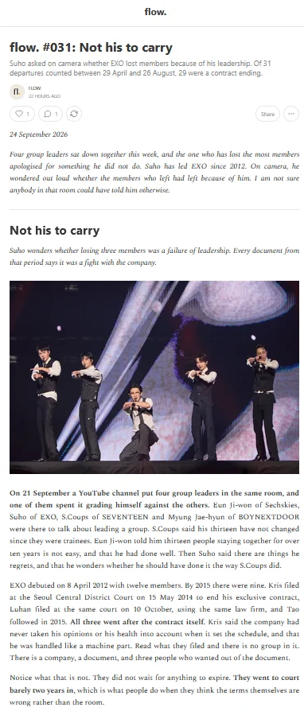

flow.
Newsletter · en anglais · hebdomadaireUne lecture de l'industrie de la K-pop sous l'angle business et données, pas fan. Le marché musical coréen lu comme n'importe quel secteur : revenus, contrats, tournées, exportations.
Chaque chiffre renvoie à une source primaire : presse coréenne de premier rang, documents réglementaires, données de marché. Des comptages maison, datés, reproductibles.
Un numéro par semaine, des visuels au fil de l'actualité.
Contrats et départs, tournées et annulations, labels et résultats financiers, charts, exportations.
